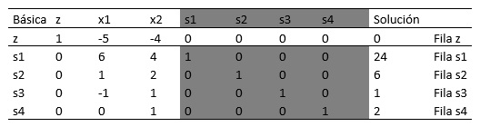
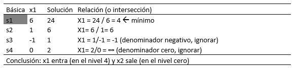
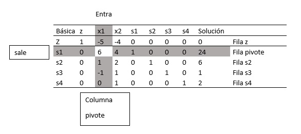
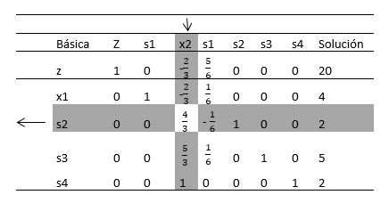
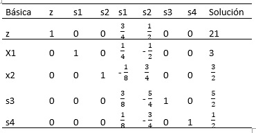
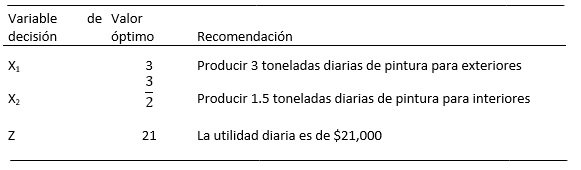

2.5.1 Determinación de la solución óptima en problemas de maximización.
El desarrollo de los cálculos con el método simplex se facilita si se imponen dos requerimientos a las restricciones de PL:
1. Todas las restricciones son ecuaciones con lado derecho no negativo.
2. Todas las variables son no negativas.
Conversión de las desigualdades en ecuaciones con lado derecho no negativo. En un modelo de PL económico, el lado derecho representa la disponibilidad de un recurso, y el izquierdo el uso del recurso por todas las actividades del modelo (variables). La cantidad excedente del lado derecho respecto de izquierdo da entonces la cantidad no utilizada del recurso.
Para convertir una desigualdad (≤) en ecuación se agrega una variable de holgura al lado izquierdo de la restricción.
La variable no negativa s1 es la holgura (o cantidad no utilizada) del recurso M1.
A continuación, una restricción (≥) establece un límite inferior en las actividades económicas de la programación lineal, así que la cantidad en la cual el lado izquierdo excede el límite mínimo representa un superávit. Así pues, la conversión de (≥) a (=) se logra restando una variable de superávit no negativa del lado izquierdo de la desigualdad.
El único requerimiento que falta es que el lado derecho de la ecuación resultante sea no negativo. Si el lado derecho resulta negativo, el requerimiento se satisface multiplicando ambos lados de la ecuación por -1.
Detalles de cálculo del algoritmo simplex
Considere el modelo de Reddy Mikks expresado en forma de ecuación
Maximizar z = 5x1 +4 x2 +0s1 + 0s2 + 0s3 +0s4
Sujeto a
6x1 + 4x2 +s1 <= 24 (Materia prima M1)
X1 + 2x2 +s2 <=6 (Materia prima M2)
-x1+x2 +s3 <=1 (Limite del Mercado)
X2 s4 <=2 (Limite de la demanda)
X1, X2, s1, s2, s3, s4 ≥ 0
Las variables s1, s2, s3, s4 son las holguras asociadas con las restricciones respectivas.
A continuación, escribimos la ecuación objetivo como:
Z – 5X1 -4X2= 0
De esta manera, la tabla inicial simplex se representa como sigue:

Elaboración propia
El diseño de la tabla simplex provee automáticamente la solución en la iteración inicial. La solución se inicia en el origen (X1, X2) = (0, 0), por lo que (X1, X2) se definen como las variables no básicas y (s1, s2, s3, s4) como las variables básicas. La variable objetivo Z y las variables básicas aparecen en la columna de la extrema izquierda (básica). Los lados derechos de las ecuaciones del modelo dan sus valores, como se muestra en la columna de la extrema derecha (solución) de la tabla; es decir, Z = 0, s1 =24, s2 =6, s3 =1, s4 =2. El resultado puede verse igualando las variables no básicas (X1, X2) a cero en todas las ecuaciones y también observando la configuración de matriz identidad especial de los coeficientes de las variables básicas (todos los elementos en las diagonales son 1, y para todos los elementos fuera de las diagonales son 0).
¿Es óptima la solución inicial? La función objetivo Z= 5X1 + 4X2 muestra que la solución puede mejorarse si se incrementa el valor de la variable X1 o de la X2 no básica por encima de cero.
Siguiendo el argumento X1 tiene que incrementarse porque tiene el coeficiente objetivo más negativo en la ecuación objetivo. Esta regla define la llamada condición de optimalidad simplex. En la terminología del algoritmo simplex, X1 se conoce como la variable de entrada porque ingresa a la solución básica.
Si X1 es la variable de entrada, una de las variables básica actuales debe salir; es decir se vuelve no básica a un nivel cero (recordamos que la cantidad de variables no básicas debe ser siempre n -m). La mecánica para determinar la variable de salida implica calcular las relaciones del lado derecho de las ecuaciones (columna solución) con los coeficientes de restricción estrictamente positivos (imposibilitando así al cero) bajo la variable de entrada, X1 como se muestra en la siguiente tabla:

Elaboración propia
¿Cómo determinan las relaciones calculadas la variable de salida y el valor de la variable de entrada? La figura muestra que las relaciones calculadas son en realidad las intersecciones de las líneas de restricción con el eje X1 (variable de entrada). Podemos ver que el valor de X1 debe incrementarse hasta la intersección no negativa mínima con el eje X1 (4=) para alcanzar el punto de esquina B. Cualquier incremento más allá de B no es factible. En el punto B, la variable básica actual s1 asociada con las restricciones 1 asume un valor de cero y se transforma en la variable de salida. La regla asociada con las relaciones calculadas se conoce como condición de factibilidad simplex porque garantiza la factibilidad de la nueva solución.
El nuevo punto de solución B se determina “intercambiando” la variable de entrada x1 y la variable de salida s1 en la tabla simplex para obtener
Variables no básicas (cero) en B: (s1, x2)
Variables básicas en B: (x1, s2, s3, s4)
El proceso de intercambio se basa en las operaciones de filas Gauss-Jordan. Identifica la columna de la variable de entrada como la columna pivote y la fila de la variable de salida como fila pivote.
La interacción de la columna pivote y la fila pivote se conoce como elemento pivote. La siguiente tabla es un replanteamiento de la tabla inicial con sus filas y columnas pivote resaltadas.

Elaboración propia
Los cálculos de Gauss- Jordán necesarios para obtener la nueva solución básica son dos tipos.
La nueva solución básica es (x1, s2, s3, s4), y la nueva tabla es:

Elaboración propia
Observe que la estructura de la nueva tabla es similar a la de la tabla inicial, en el sentido de que los coeficientes de las restricciones de la variable básica forman una matriz de identidad. Por consiguiente cuando igualamos las nuevas variables no básicas x2 y s1 a cero la columna solución de forma automática de la nueva solución (x1 = 4, s2 = 2, s3 = 5, s4 = 2)3. Este “acondicionamiento” de la tabla es el resultado de la aplicación de las operaciones de filas de Gauss-Jordan. El nuevo valor objetivo es Z = 20, el cual es consistente con
Nueva Z = Anterior Z + Nuevo valor X1 X su coeficiente objetivo
= 0 + 4 X 5 = 20
Por otra parte, Z =4 X valor de x1 + 0 X valor de s2 + 0 X valor de s3 + 0 X valor de x4 = 4 X 5 + 0 X 2 + 0 X 5 + 0 X 2 = 20.
En la última tabla, la condición de optimalidad muestra que X2 es la variable de entrada. La condición de factibilidad produce la siguiente información:

Elaboración propia
Según la condición de optimalidad, ninguno del coeficiente de la fila Z son negativos. De ahí que la última tabla sea óptima.
La solución óptima puede leerse en la tabla simplex de la siguiente manera. Los valores óptimos de las variables en la columna Basic aparecen en la columna Solución del lado derecho y se interpretan como sigue:

Elaboración propia
La solución también da el estado de los recursos. Un recurso se designa como escaso si la variable de holgura asociada es cero, es decir, las actividades (variables) del modelo consumieron el recurso por completo. De lo contrario, si la holgura es positiva, entonces el recurso es abundante. La siguiente tabla clasifica las restricciones del modelo: